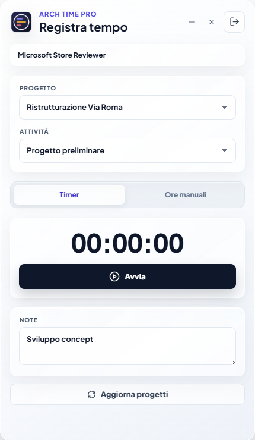

Arch Time Pro
Modalità compatta
Riduci il timer. Continua a lavorare.
Il mini timer resta nell’angolo dello schermo, con progetto, attività e tempo sempre visibili.

Timer desktop
Seleziona progetto e attività. Arch Time Mini Timer mantiene tutto sincronizzato con lo studio.

Modalità compatta
Il mini timer resta nell’angolo dello schermo, con progetto, attività e tempo sempre visibili.